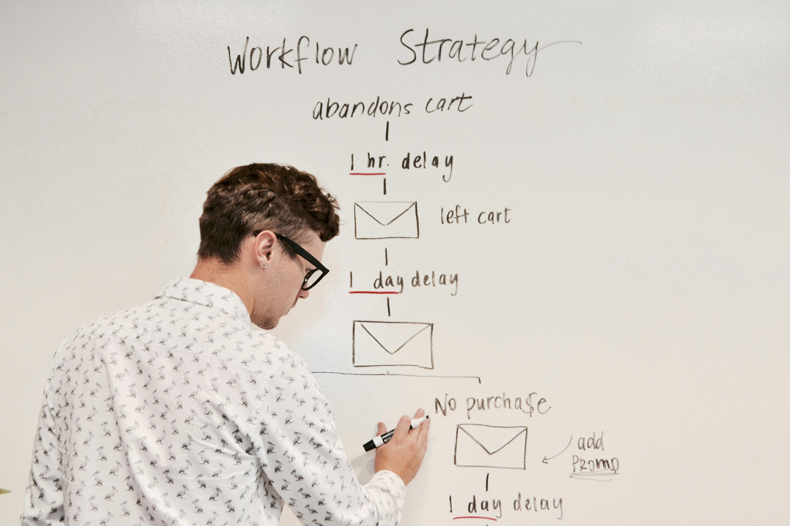
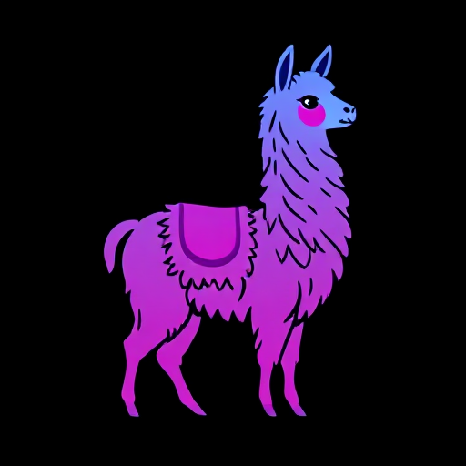

Projects
Sentiment Analysis on NYT News
A sentiment analysis project that uses the VADER model to analyze the sentiment of news articles from The New York Times.
VADER • Pandas • Matplotlib
View on GitHubFire & Smoke Detection (YOLOX)
A computer vision project that uses the YOLOX model to detect fire and smoke in real-time video streams.
YOLOX • OpenCV • PyTorch
View on GitHub
OCR App with Streamlit
A web-based OCR application built with Streamlit and PaddleOCR. The app extracts text from images and PDFs.
Streamlit • PaddleOCR • OpenCV
View on GitHub
LangFlow RAG Agent
A Retrieval-Augmented Generation (RAG) agent built with LangFlow, AstraDB, and a local LLM. Demonstrates ingestion, management, and retrieval of PDF data for context-aware responses.
LangFlow • AstraDB • LM Studio • Hermes-3-3B
View on GitHub
LlamaIndex + LanceDB + LM Studio
Document indexing and querying using LlamaIndex, LanceDB as a vector store, and a locally hosted LLM via LM Studio.
LlamaIndex • LanceDB • HuggingFace Embeddings
View on GitHub
Streamlit ML Web App
A multi-page Streamlit app for end-to-end ML: preprocessing, EDA, classification, clustering, time series, regression, and OCR.
Scikit-learn • XGBoost • LightGBM • Plotly
View on GitHub